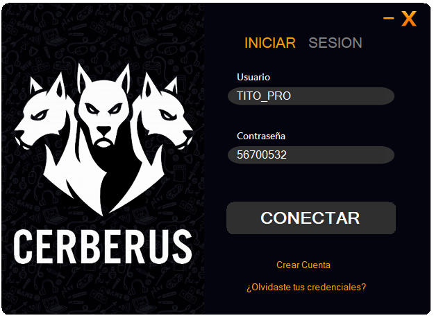
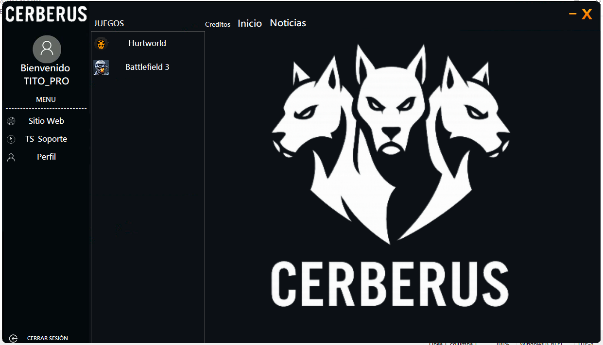
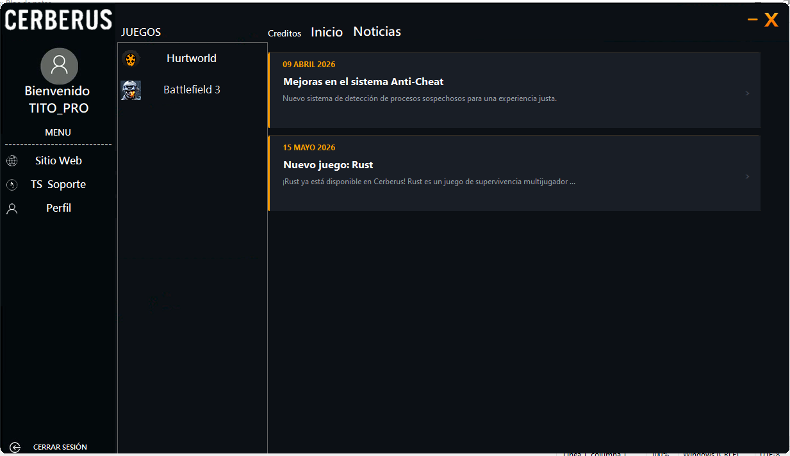
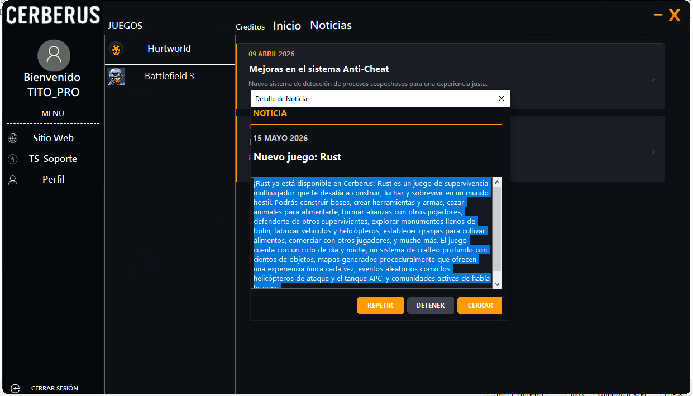
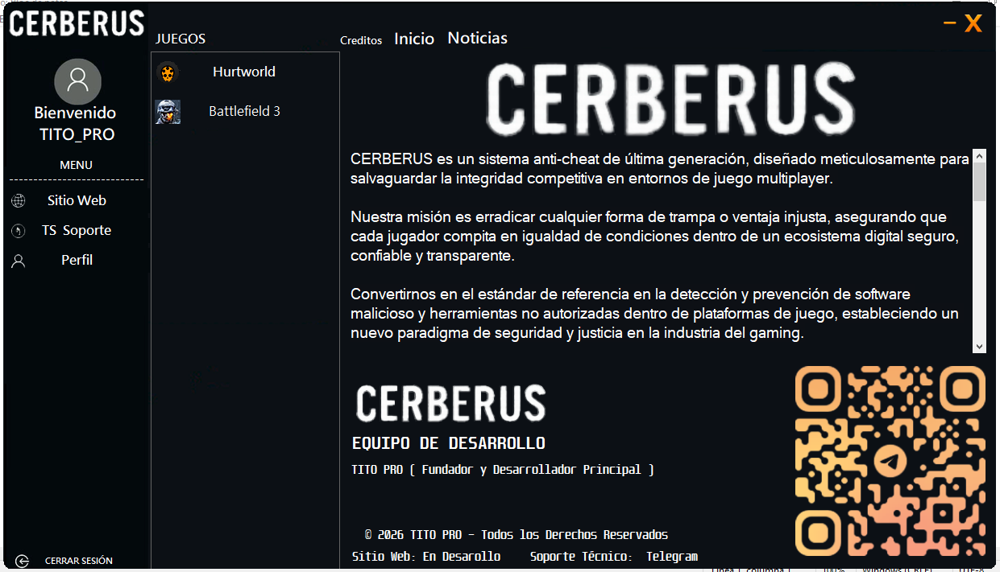
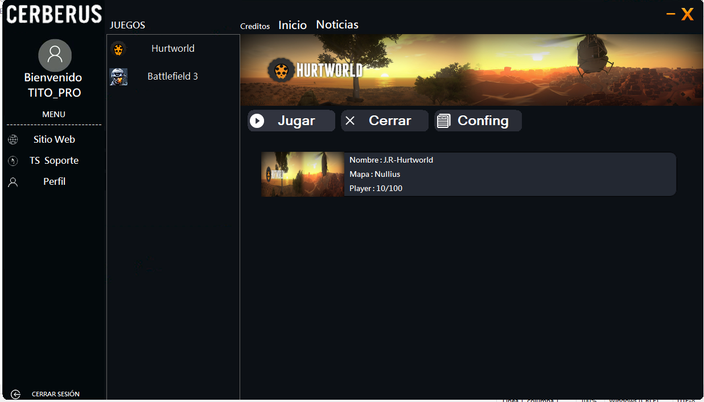
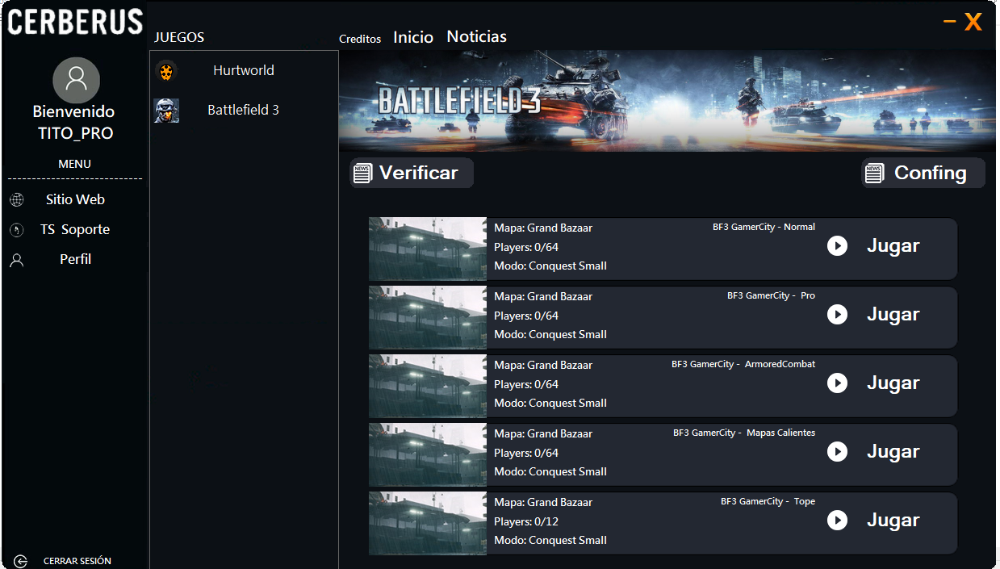
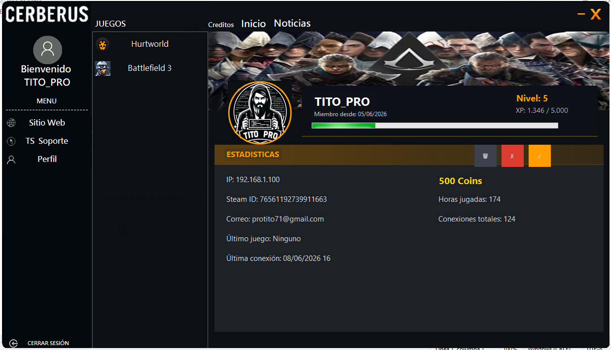

Este sistema anti-trampas ha sido desarrollado para comunidades de juegos con el objetivo de prevenir modificaciones no autorizadas del cliente. Incluye un sistema de escaneo de procesos para la detección de trampas, registro de usuarios, un panel administrativo, y funcionalidades para el envío de mensajes automáticos y manuales, todo orientado a optimizar el uso y la seguridad del programa.







